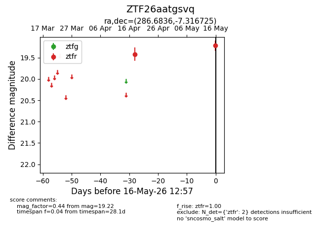
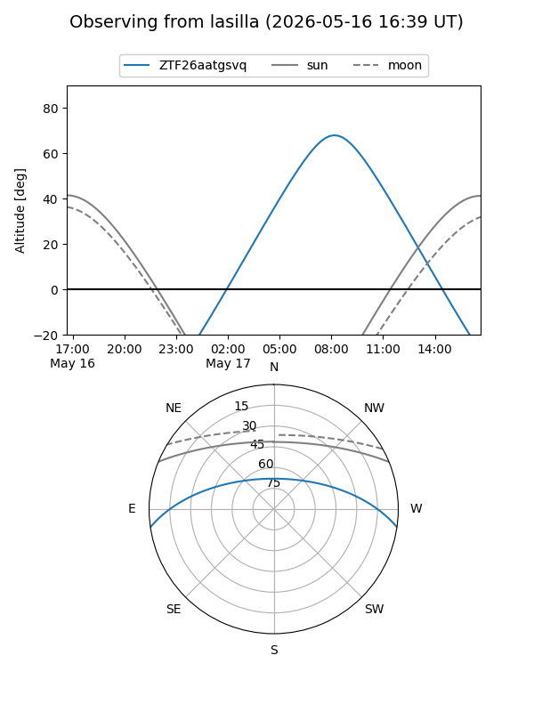
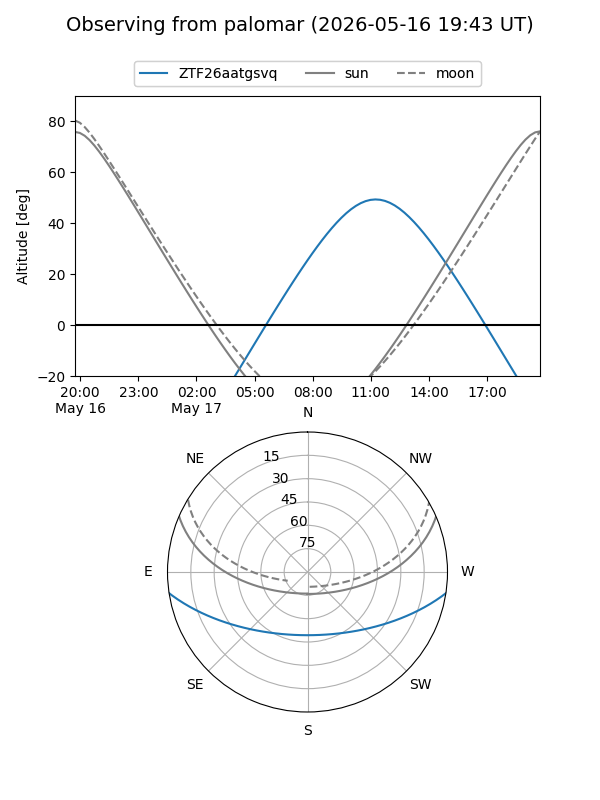

ZTF26aatgsvq
Target ZTF26aatgsvq at 2026-05-16 12:59
Aliases and brokers:
FINK: link
Lasair: link
ALeRCE: link
alt names
ZTF26aatgsvq (ztf,fink_ztf)
Coordinates:
equatorial (ra, dec) = 286.6836,-7.31673
equatorial (HMS+DMS) = 19:06:44.07,-07:19:00.21
galactic (l, b) = (28.1275,-6.71583)
Flags:
Photometry:
last ztfr=19.22
2 ztfr detections
Lightcurve

Visibility


Additional plots